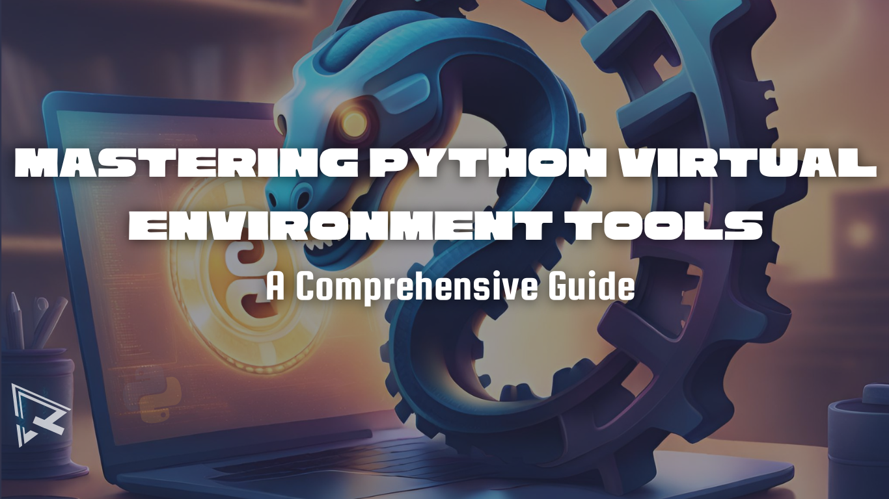

Python Virtual Environment Tools

Have you ever found yourself scratching your head over a Python project, wondering, ‘Why did it suddenly stop working?’ or ‘Where did these errors come from?’ You're definitely not alone. Such moments of frustration are familiar to many developers, from beginners to expert pros.
In the ever-evolving field of software development, Python stands as a tool of choice across an array of fields, from data science and artificial intelligence to web development and scientific research. However, Python user have varying levels of programming experience and they come from diverse professional backgrounds.
Even with the Python's simplicity and power, a common challenge, which is less obvious to non or less experienced programmer, is managing depenedencies. This occures when working on multiple project using the main Python enviroment, which can lead to onflicting package versions. That’s where virtual environments come to the rescue, offering an elegant solution to the problem at hand.
Experienced Python developers and data scientists often need to navigate the complexities of project management efficiency using virtual envronment tools. While some developers prefer to go for separate environments for each project, I've found that using a shared environment for similar projects can streamline the workflow. In this series, we'll explore this approach and more.
This is a multi-part series that focuses on Python development tools. In this first article I will introduce and examine a collection of essential tools, showcasing their unique features and applications in Python development and data science. As the series progresses, we will provide in-depth insights into how these tools enable developers and data scientists at all levels to efficiently create isolated environments and manage dependencies. Future articles will focus on practical demonstrations, advanced tips, and best practices for using these tools to their full potential.
Essential Environment Tools
Venv: Python Built-in Virtual Environment
The venv tool is a part of Python 3.3 and later, it is Python's native solution for creating isolated virtual environments. Each environment has its own directory, separate from other projects, ensuring that different projects can have their own dependencies without conflict.
Key Features
- It Comes pre-installed with Python 3.3 and later, eliminating the need for additional installations.
- It is designed to be lightweight, simple and efficient, which makes it an ideal choice for developers who need a straightforward solution for dependency management.
Key Considerations
- It is only available in Python 3.3 and upwards, limiting its use for projects based on older Python versions.
- While its simplicity is a strength,
venvlacks some of the advanced features and customizations available in third-party tools.
For more details, you may consider checking venv the documentation.
Virtualenv: The Flexible Virtual Environment Manager
Before venv became part of the Python standard library in version 3.3, virtualenv was the go-to tool for creating isolated Python environments. Its enduring popularity stems from its compatibility with older Python versions and its comprehensive feature set.
Key Features
- It supports a broader range of Python versions, offering a solution for projects that rely on older version of Python.
- It is heighly cusotmizable compared to
venv, which allows developers to customize their environments more precisely.
Key Considerations
- Unlike
venv,virtualenvneeds to be installed separately, adding an extra step in the setup process. - The wide array of features and options might be overwhelming for new Python users or those seeking simplicity.
For more details, you may consider checking virtualenv documentation.
Pipenv: The Streamlined Package Manager
Unlike traditional tools focused solely on environment management, pipenv combines the ease of virtual environment creation with robust package management. This tool is especially favored for its automated approach to managing dependencies and virtual environments, simplifying the workflow for Python developers.
It's a comprehensive solution that not only manages virtual environments but also keeps track of your project's dependencies through the Pipfile, automating the process of adding and removing packages as your project evolves.
Key Features
- It automates the handling of your project's dependencies, offering a hassle-free experience.
- It takes care of creating and managing virtual environments seamlesslt.
Key Considerations
- Developers accustomed to traditional Python tools may need time to adapt to pipenv's methodology.
- In some cases,
pipenvcan be slower than other tools, particularly when resolving complex dependencies.
For more details, you may consider checking pipenv documentation.
Pipx: The Solution for Standalone Python Environments
pipx stands out in the Python toolkit for its unique ability to install and run Python applications in isolated environments. This tool is particularly valuable for managing Python-based tools and applications that require separation from the main Python environment.
The primary appeal of pipx lies in its capability to create standalone environments for each tool or application. This means you can run applications globally across your system while maintaining isolation from other Python environments, thereby avoiding conflicts and dependency issues.
Key Features
- It installs and runs Python tools globally without affecting other Python projects or environments.
- It makes it easy to manage individual applications, each in its own isolated environment, enhancing both security and stability.
Key Considerations
- It is most effective when used for applications that need to be accessible globally but isolated at the same time.
- It has a Learning Curve, which means familiarizing yourself with
pipxand its specific use cases might require some initial exploration, particularly for those new to environment isolation concepts.
For more details, you may consider checking pipx documentation.
PDM: The Next Generation Python Package Manager with PEP 582
PDM (Python Development Master) represents the cutting edge in Python package management, embracing the latest standards to optimize and streamline the development process. It's particularly notable for its support of PEP 582, a new standard that revolutionizes how package dependencies are handled in Python projects.
Unlike traditional package managers, PDM allows for direct installation of dependencies into the project directory. This approach creates an isolated environment for each project without the need for a separate virtual environment directory, simplifying project setup and management.
Key Features
- By incorporating dependencies directly into the project directory,
PDMeliminates the complexities associated with traditional virtual environment management. - PDM stays ahead of the curve by supporting
PEP 582, setting a new standard in efficient and streamlined package management.
Key Considerations
- As
PDMfollows the relatively newPEP 582standard, developers may need time to adapt to this modern approach to package management. - Ensure that your project setup and workflow are compatible with PDM's method of handling dependencies and environments.
For more details, you may consider checking PDM documentation.
Poetry: The Blend of Dependency Management and Packaging Tool
Poetry emerges as a modern and intuitive tool in the Python ecosystem, designed to simplify the often-complex world of dependency management and package handling. Unlike traditional tools, poetry provides a unified approach to managing your project's dependencies and packaging, making it a favored choice for developers seeking streamlined project management.
This tool stands out with its ability to let you declare project dependencies in a straightforward manner. poetry not only manages these dependencies efficiently but also takes care of creating the virtual environment for your project, ensuring a clean and isolated workspace.
Key Features
- With
poetry, the complexities of dependency management are significantly reduced, providing a more user-friendly experience. - It combines environment management with packaging, streamlining the entire process from development to deployment.
Key Considerations
- For those accustomed to traditional Python tools, adapting to poetry's way of managing dependencies and packaging might require some initial learning.
- Migrating existing projects to poetry can sometimes be challenging, especially for complex setups.
For more details, you may consider checking poetry documentation.
Virtualenvwrapper: A Robust Extension to virtualenv
Building upon the foundations laid by virtualenv, virtualenvwrapper emerges as a powerful extension that enriches the virtual environment experience for Python developers. It offers a suite of additional commands that simplify the management of your virtual environments.
This tool revolutionizes the way you interact with virtual environments by centralizing them in a single location. It not only enhances the organization but also introduces a variety of convenient commands, making navigation and management of different environments more intuitive and efficient.
Key Features
- Keep all your virtual environments in one place for easy access and management.
- Enjoy the benefits of additional commands that make working with virtual environments more user-friendly and efficient.
Key Considerations
- Dependent on virtualenv: As an extension of virtualenv, it requires the base tool to be installed and functioning.
- Learning Additional Commands: While these commands are meant to simplify tasks, they require some initial learning to be used effectively.
For more details, you may consider checking virtualenvwrapper documentation.
Pew: The Universal Virtual Environment Commander
Overview of Pew: In the realm of Python development, Pew stands out as a versatile tool designed to manage multiple virtual environments. It offers a comprehensive suite of commands, much like virtualenvwrapper, but with a key advantage: compatibility with any Python interpreter.
This tool is ideal for developers seeking flexibility and simplicity in managing their virtual environments. Whether you’re working with different projects or experimenting with various Python versions, Pew provides the necessary commands to create, delete, and seamlessly switch between environments.
Key Features
Pewworks harmoniously with any Python interpreter, making it a universal tool for environment management.- With its intuitive command set, managing multiple environments becomes a straightforward and hassle-free task.
Key Considerations
- Getting accustomed to
Pew's command set may require some time, especially for those new to virtual environment management. - Seamlessly integrating Pew into your existing workflow may take some adjustment, particularly if you’re transitioning from other environment management tools.
To explore Pew in more detail, you can check the github repo here.
Python Version Management
Pyenv: Beyond Version Management to Virtual Environment Mastery
While pyenv is best known for its robust Python version management capabilities, it's also a powerful ally in the world of virtual environments. By integrating the pyenv-virtualenv plugin, pyenv transcends its primary function, offering a seamless way to manage not just Python versions, but also the virtual environments associated with them.
This tool is a boon for developers juggling multiple Python projects, each requiring different versions and environments. pyenv simplifies this complexity, allowing easy switching between various Python versions and their corresponding virtual environments, making it an invaluable tool in your Python development toolkit.
Key Features
- Effortlessly manage and switch between different Python versions, each tailored for specific project needs.
- With the pyenv-virtualenv plugin, manage virtual environments directly within pyenv, streamlining your workflow.
Key Considerations
- The comprehensive nature of
pyenvmeans there's a bit more to learn, especially for those new to Python version management. - Setting up
pyenvand its virtual environment plugin might take a bit of time, but the payoff in terms of project management efficiency is well worth it.
For more detail check pyenv documentation here.
Pyenv-Virtualenvwrapper: A Synergy of Version and Environment Management
In the quest for an optimal Python development setup, Pyenv-Virtualenvwrapper emerges as a stellar combination, uniting the version management prowess of pyenv with the environment handling efficiency of virtualenvwrapper. This fusion brings the best of both tools into a single, cohesive package.
The Power of Pyenv-Virtualenvwrapper resides in its ideal use for developers who need to manage multiple Python versions and their associated environments, this tool leverages the easy-to-use commands of virtualenvwrapper while providing the version control capabilities of pyenv, making it a robust choice for complex Python projects.
Key Features
- Manage multiple Python versions and their virtual environments with ease, all under one roof.
- Enjoy the familiar and user-friendly command set of virtualenvwrapper while taking advantage of pyenv's version control.
Key Considerations
- Integrating both pyenv and virtualenvwrapper might require a more involved setup process initially.
- While offering powerful capabilities, this tool may present a steeper learning curve for developers new to either pyenv or virtualenvwrapper.
For mere about this tool, you can check here here.
Distribution Tools
Anaconda Distribution's Package Manager Conda
Within the robust Anaconda distribution, conda stands out as a comprehensive package manager and environment management system. Tailored not just for Python, but also for other languages like R, conda excels in creating virtual environments, particularly for data science projects. The Edge of Using Conda: What sets conda apart is its ability to manage complex dependencies across various languages, making it an indispensable tool for data scientists and developers who work in multi-language ecosystems.
Key Features
- It is a cross-language package management, it can Handle Python and R packages seamlessly.
- It is designed specifically to meet the complex needs of data science projects, which simplifies environment and dependency management.
Keys Considerations
- The extensive features of
condacome with a learning curve, particularly for those new to multi-language package management. - Being a powerful tool,
condacan be more resource-intensive compared to lighter-weight alternatives, especially on systems with limited resources. - One notable drawback of
condais its slow performance, furtunately, the next tools overcome this issue.
Important links
I have listed here few links related to conda that are worth visiting:
Mamba: The Speedy Alternative to Conda
Emerging as a high-performance alternative within the Mambaforge distribution, Mamba redefines package and environment management efficiency. It's designed as a drop-in replacement for conda, emphasizing speed and smooth user experience, particularly for heavy dependency management tasks.
If you appreciate the capabilities of conda but require faster execution, Mamba is your go-to choice. It delivers the same functionalities but with a significant boost in speed and responsiveness, making it a good candidate for data scientist who value time and efficiency.
Key Features
Mambaexcels in rapid package resolution and environment creation, saving valuable time in development cycles.- It integrates effortlessly with the existing Conda ecosystem, providing a familiar yet enhanced experience.
Key Considerations
- While Mamba is designed for speed, ensure it aligns with your specific project requirements, especially in complex environments.
- For those accustomed to
conda, adapting to Mamba’s speed might require slight adjustments in workflow management.
Check Mamba documentation here
Vex: The Shortcut to Virtual Environment Commands
Vex stands out in the Python development toolkit as a nimble and efficient tool designed to execute commands within a virtual environment without the need for prior activation. It addresses the common need for running isolated commands, making it a valuable asset for scripting and quick task execution.
This tool is particularly handy for developers who frequently work with scripts or need to execute one-off commands. With Vex, there's no need to switch your current shell environment, offering a seamless experience and saving time.
Key Features
- Run commands in any virtual environment directly, bypassing the need for activation.
- Vex is a boon for scripting scenarios, where changing the shell environment for each command is impractical.
Key Considerations
- While highly effective for its intended purpose, Vex is more of a specialized tool and might not be necessary for all development workflows.
- Incorporating Vex into your routine may require some initial setup and familiarization, especially if your workflow is heavily reliant on traditional environment activation methods.
Check out more details here.
Automating Environment Variables
Direnv: The Automating Environment Configuration Tool
While direnv extends its utility beyond just Python, it offers a particularly useful feature for developers: the automatic setting of shell environment variables. This tool shines in its ability to adapt the environment based on the current directory, streamlining the workflow for projects with specific configuration needs.
For Python developers, direnv becomes an invaluable asset when managing virtual environments. By entering a project directory, direnv can automatically activate the corresponding virtual environment, eliminating manual steps and enhancing productivity.
Key Features
- Move between project directories with environment settings automatically adjusted, thanks to direnv.
- Forget about manually activating virtual environments every time you switch projects. direnv does it for you.
Key Considerations
- As a versatile tool, direnv can be used for a variety of purposes, making it a broad tool that might offer more features than a Python-specific developer needs.
- Setting up direnv to work seamlessly with your projects may require some initial configuration and understanding of shell scripting.
You can explore direnv further here
Autoenv: The Automatic Environment Activator
Much like direnv, autoenv is a tool designed to simplify your workflow, but with a specific focus on automating the activation of virtual environments. It's a handy tool for Python developers who frequently switch between multiple projects.
autoenv simply worke by navigating (cd) into a directory containing a .env file, autoenv springs into action, automatically activating the virtual environment associated with that project. This feature is a significant time-saver, reducing the repetitive task of manual environment activation.
Key Features
- Helps to avoid manually activating virtual environments each time you switch projects.
autoenvis particularly useful for developers working on several projects simultaneously, ensuring the right environment is always active.
Key Considerations
- Each project directory requires its own
.envfile forautoenvto work, meaning a bit of upfront setup is needed. - While similar to
direnv,autoenvis more focused on Python virtual environments, which may make it a more tailored choice for Python-specific workflows.
For more details about autoenv check here.
System Specific Development Tools
Virtualfish: A Specialized Tool for Fish Shell Users
For those who prefer using the Fish shell, a unique and powerful tool is available – Virtualfish. This tool is designed as an alternative to virtualenvwrapper, offering a suite of features for managing virtual environments, but with a special focus on the Fish shell's distinctive syntax and behavior.
The Virtualfish is a go-to for Fish Shell devotees not to only mirrors many of the functionalities of virtualenvwrapper but also seamlessly integrates with the Fish shell environment, making it a harmonious choice for developers who have chosen Fish as their command-line interface.
Key Features
Virtualfishis specifically designed to align with the Fish shell's unique characteristics, ensuring a smooth and intuitive experience.- It offers comprehensive tools for managing virtual environments, similar to virtualenvwrapper, but within the Fish ecosystem.
Key Considerations
- As a tool dedicated to the Fish shell, it's not suitable for users of other shell environments like Bash or Zsh. 2.To get the most out of Virtualfish, users should be comfortable with the Fish shell and its syntax.
Check Virtualfish documentation here.
Pyenv-win: The Windows-Compatible Python Version Manager
Recognizing the diverse needs of developers across different operating systems, pyenv-win emerges as the Windows-specific adaptation of the popular Python version management tool pyenv. It's designed to bring the flexibility and convenience of pyenv to the Windows environment.
This tool is a designed for Python developers working on Windows, as it allows for the management of multiple Python versions on a single system. Its compatibility with Windows makes it an essential tool in a Python developer's arsenal, particularly for those who require the ability to switch between various Python versions seamlessly.
Key Features
- Easily switch between different Python versions as your project requirements change.
- It can be used in conjunction with virtual environment tools, providing even greater flexibility and control over your development setup.
Key Considerations
- It is exclusively for Windows users, so those on other operating systems will need to look at alternatives like pyenv.
- Getting
pyenv-winup and running may require some initial setup and configuration, especially for developers new to version management tools.
Explore how to use pyenv-winhere.
Development Tools
Devpi: Combining a PyPI Server with a Packaging Frontend
Devpi serves a multifaceted role in the Python development landscape. It's not just a PyPI server, but also a powerful packaging frontend. This tool offers a comprehensive solution for managing Python packages and dependencies, making it a valuable resource for developers seeking streamlined package management.
Devpi Stands Out for its ability to function as both a local PyPI server and a packaging interface allows developers to efficiently handle dependencies. When used in conjunction with virtual environments, Devpi ensures consistent management across different projects, enhancing both organization and productivity.
Key Features
- Manage and store your Python packages in one place, simplifying access and control.
- With its robust dependency management features, Devpi ensures that all your project dependencies are well-organized and easily accessible.
Key Considerations
- Setting up Devpi as a local PyPI server requires some initial effort and understanding of package management systems.
- While highly effective, Devpi is most beneficial for projects that require detailed package management or for teams looking to maintain a private PyPI server.
Check Devpi documentation here
The Asdf-python Ecosystem: Version and Environment Control
As an integral part of the asdf version manager, asdf-python stands out as a powerful plugin designed for Python developers. This tool extends the capabilities of the asdf manager, specifically focusing on managing Python versions effectively.
Not only does it provide robust version management, but it also seamlessly integrates with virtual environment tools. This dual functionality makes asdf-python a comprehensive solution for managing both Python versions and their associated environments, streamlining the development process.
Key Features
- Effortlessly switch between different Python versions, catering to diverse project needs.
- It works in tandem with virtual environment tools, offering a unified approach to both version and environment management.
Key Considerations
- As a plugin for asdf, asdf-python functions within the broader asdf version management system, requiring familiarity with asdf's operations.
- Initial setup of asdf-python, particularly in integrating it with virtual environment tools, may require some time and configuration effort.
Check asdf-python github repo for more information.
Pyflow: The All-in-One Package and Environment Manager
In the world of Python development, managing packages and environments can often become a complex task. Pyflow steps in as a comprehensive solution, streamlining both dependency management and environment setup. Its user-friendly approach and automation make it a preferred choice for many Python developers.
What sets Pyflow apart is its ability to automatically create and manage the appropriate virtual environment for each project. This is based on the specific requirements of the project, thereby ensuring that each environment is perfectly tailored to its needs.
For a detailed guide on making the most of Pyflow in your Python projects, visit the Pyflow documentation.
Key Features
- Pyflow takes the hassle out of handling dependencies, offering a streamlined and automated process.
- It intelligently sets up the ideal virtual environment for your project, based on its unique requirements.
Key Considerations
- While
Pyflowsimplifies many processes, familiarizing yourself with its operations and features may require some initial effort. - Pyflow's approach to creating distinct environments for each project means developers need to be comfortable with managing multiple environments.
Tox: The Comprehensive Testing and Environment Tool
Primarily renowned as a powerful testing tool, Tox offers more than just a way to run tests. It serves a dual purpose by also managing virtual environments specifically for testing. This makes Tox an invaluable asset in ensuring that your Python code is robust and reliable across various environments.
Tox automates the process of testing in different environments, allowing developers to effortlessly test their code against multiple Python versions and configurations. This automation is key to maintaining high-quality code that's compatible across different setups.
Key Features
- Simulate different environments to test your Python projects, ensuring compatibility and stability.
- Tox not only tests but also manages the virtual environments needed for these tests, streamlining the entire process.
Key Considerations
- While
Toxdoes manage virtual environments, its primary function is testing, making it most beneficial for projects where automated testing is a priority. - Getting the most out of
Tox, especially its more advanced features, might require some initial learning and setup effort.
You can visit the Tox documentation.
Invoke: Automating Tasks in Python Development
Invoke is a Python task execution tool and library, designed to simplify the process of managing and running administrative tasks in software projects. It serves as a helpful tool for automating common or repetitive tasks in Python development, ranging from build processes to deployment scripts.
The strength of Invoke lies in its simplicity and flexibility, allowing developers to write tasks in pure Python. This contrasts with other tools that might require learning a domain-specific language or complex configuration setups.
Key Features
- With
Invoke, writing tasks is as simple as writing regular Python functions, making it intuitive for Python developers. - It allows for detailed customization of tasks and supports complex task dependencies, giving you control over your build and deployment processes.
Key Considerations
- While Invoke is designed to be simple, developers new to task automation might need some time to familiarize themselves with its capabilities and best practices.
- Depending on your current setup, integrating Invoke into your workflow might require adjustments, especially if you're transitioning from a different task management system.
Explore the Invoke documentation here
Nox: Automation Testing Tool
Nox is a Python automation tool, primarily focused on simplifying testing across multiple Python environments. Similar to Tox, Nox allows developers to configure, create, and manage environments for testing with different Python versions, but with the added flexibility of writing configurations in Python itself.
With Nox, the configuration for each test environment is written in Python, allowing more dynamic and complex workflows compared to declarative configurations. This capability makes it a powerful tool for developers who require a programmable approach to environment management and testing.
Key Features of Integrating Nox into Your Development Process
- Define and manage test environments and workflows using Python scripts, offering a higher degree of control and customization.
- Easily test your code across various environments and Python versions, ensuring compatibility and robustness.
Key Considerations
- Getting started with Nox requires an understanding of its configuration approach, which might take some time for developers new to the tool.
- If you're already using a tool like Tox, consider the specific benefits Nox offers to determine if the switch or integration is beneficial for your workflow.
You may check Nox documentation here.
In this article, we listed a list of Python development tools, and in the subsequent articles I will discuss most of the mentioned tools here in more detail.